Ориентирование в Москве
Лесной спорт большого города
Московское ориентирование появилось на несколько лет позже, чем в Ленинграде и Прибалтике, но очень быстро стало одним из главных его центров. Здесь работала Центральная комиссия (позже секция) по слётам и соревнованиям, здесь учреждались союзная и российская федерации, москвичи стали первыми в стране мастерами спорта среди мужчин, а москвич Иван Кузьмин в 1994 году — первым российским чемпионом мира. Туристы соревновались по «закрытому маршруту» у Тучково ещё в 1958 году, а днём рождения московского ориентирования считается 19 мая 1963 года, когда у деревни Лямцино прошли первые соревнования по только что утверждённым правилам. Полем для этого спорта стали Клинско-Дмитровская гряда, долины Истры и Москвы-реки, лыткаринские карьеры и десятки городских лесопарков — от Битцы до Лосиного острова.
Статья прослеживает путь московского и подмосковного ориентирования — от синек с рюкзаком контрольного груза до карт исторического центра и вечерних серий в парках. Опорой служат хронология московского ориентирования (1958–2003) и «Имена» на o-moscow.ru, глава «г. Москва» в сборнике ФСОР «Ориентирование в регионах» (Ю. С. Константинов, по материалам Б. Ю. Томсона, Н. Н. Куницына и Д. Л. Никифорова), хроника Федерации спортивного ориентирования России, журнал «Азимут» и, конечно, календарь и архив карт O-Maps. Все упомянутые люди собраны в указателе имён в конце статьи.
- Предтеча
- 1958, соревнования туристов с ночным этапом по карте у Тучково (победила команда МХТИ, капитан Б. И. Огородников)
- День рождения
- 19 мая 1963, Лямцино у платформы Востряково
- Федерация
- с 30 ноября 1977 (до этого — комиссия по слётам и соревнованиям и секция ориентирования при Московском совете по туризму)
- Чемпионы мира
- И. Кузьмин (лыжи, 1994), Р. Грицан (лыжи и велосипед, с 2002), К. Черных и Н. Микрюкова (велосипед, с 2006); из Подмосковья — В. Корчагин (лыжи, 1998: длинная дистанция и эстафета)
- Главные районы
- Клинско-Дмитровская гряда, Лыткарино, Битца, Измайлово, Планерная и Химки, Раздоры и Ромашково
- Архив O-Maps
- 713 карт Москвы и Подмосковья (700 после исключения 13 записей; 676 с известным годом на диаграмме); 1 443 события московского региона в календаре: 1 346 локальных записей 2013–2027 годов и 97 записей общих календарей 1958–2027 годов (на 14 ноября 2026 года; все числа O-Maps — на эту дату)
Места на карте
Где проходили соревнования, о которых рассказывает статья. Точка стоит там же, где событие на карте календаря O-Maps — в его координатах или в центре его карты, поэтому у многодневных стартов точек несколько. Цвет точки показывает, когда место впервые появляется в статье, число в кружке — сколько рядом точек. Значок 📍 в тексте ведёт к месту на этой карте.
Все места списком
1958–1962: синьки, рюкзаки и первые правила
Начиналось всё в туристских клубах. В 1958 году активисты Московского городского клуба туристов создали комиссию по слётам и соревнованиям (она заседала на Рабочей улице, в доме, который не сохранился); возглавил её выпускник автомеханического института Алексей Павлович Ярышев — так его называет хронология o-moscow.ru, а страница «Имён» и другие годы хронологии — Александром Павловичем. 6–7 июня того же года у станции Тучково на берегу Москвы-реки прошли соревнования московских туристов📍: поздно вечером девяноста командам вручили карты с нанесёнными контрольными пунктами, причём пункт тем дороже, чем дальше от финиша и чем лучше спрятан. К утру команды вернулись, отдохнули и пошли на полосу препятствий — переплыть реку, пройти на байдарках против течения, перенести через овраг по верёвке «пострадавшего», поставить палатку и развести костёр. Первыми стали студенты Московского химико-технологического института им. Менделеева во главе с капитаном Борисом Огородниковым, вторыми — туристы «Динамо», третьими — «Труда».
Следующей весной прошло первое ночное командное первенство Москвы по «закрытому маршруту» среди коллективов физкультуры. По хронологии o-moscow.ru, это было в ночь с 19 на 20 марта 1959 года; по сборнику ФСОР — с 18 на 19 марта, а сам Борис Томсон, впоследствии многолетний секретарь московской секции, датой своего дебюта называет 19 марта. Участники ехали электричкой с Ярославского вокзала, и капитанам прямо в поезде выдавали синьку, увеличенную до масштаба 1:50 000 с топоосновы 1922 года; на обороте были указаны азимуты, число КП и даже магнитное склонение. Каждый нёс рюкзак с пятью килограммами груза, а финишировать надо было в деревне Жучки к полудню (по сборнику ФСОР, карты вручали капитанам в полночь на станциях Хотьково, 55 км и Абрамцево). Осенью 1959-го сборная московских туристов, составленная из спортсменов Электролампового завода, съездила по инициативе директора клуба туристов Михаила Злацена на международную встречу в Болгарию и заняла четвёртое место вслед за командами ГДР, Чехословакии и Венгрии.
Об опыте соседей москвичи узнавали из печати: в 1961 году альманах «Туристские тропы» опубликовал сообщения о зарубежных соревнованиях и выдержки из международных правил (авторы — Г. Васильева и И. Лев), а на методической конференции в Тарту в декабре того же года среди московских делегатов был представитель коллегии судей Игорь Плотке. В 1961 году руководитель кружка юных судей Московского дворца пионеров Валентин Куликов начал проводить соревнования юных туристов по специально подготовленным картам. В феврале 1962 года на первенстве клуба туристов Первомайского района у платформы Калистово впервые поставили маркированную трассу: ошибку в наколе КП штрафовали по шкале «1 мм — 1 минута, 2 мм — 2, 3 мм — 4, 4 мм — 8», и такую систему признали неудачной. Тем же февралём москвич Геннадий Чалов выиграл «размеченную трассу» на слёте «Европа — Азия» под Свердловском, а в марте у платформы Берёзки-Дачные прошло первое личное первенство Москвы на маркированной трассе — неофициальное, потому что правила ещё не были утверждены (победили Лариса Владимирова и Г. Чалов). Летом 1962 года при Центральном совете по туризму появилась Центральная комиссия по слётам и соревнованиям; её председателем на семнадцать лет стал москвич, химик Владимир Николаевич Кудрявцев.
1963: день рождения московского ориентирования
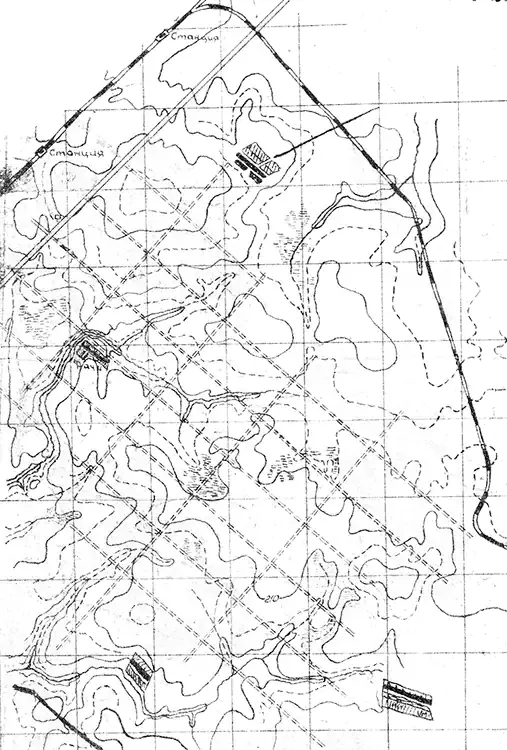
В апреле Центральный совет по туризму утвердил «Правила туристских соревнований», и молодая дисциплина получила первый документ, единый для всей страны. Уже 19 мая 1963 года у деревни Лямцино возле платформы Востряково Павелецкой дороги по этим правилам прошли предварительные отборочные соревнования в сборную Москвы📍 — с них и ведут отсчёт московского ориентирования. Маркированную трассу организовали Александр Ярышев (главный судья) и Людмила Ярышева (главный секретарь). Карта, по сборнику ФСОР, была масштаба 1:50 000 (на самой карте, опубликованной в хронологии o-moscow.ru, подписано «в 1 см — 650 м»), штраф — 2 минуты за миллиметр ошибки, 4 минуты за два, 9 минут за три, и, хотя все пункты разрешалось наносить на карту на финише, призёр Анатолий Карасик набрал около полутора часов штрафа, а средний штраф участников превысил четыре часа («Ориентирование в регионах», с. 359). Из лучших сформировали школу спортивного ориентирования со старшим тренером Борисом Огородниковым.
30 июня на слёте московских туристов под Звенигородом, у деревни Дютьково, впервые разыграли соревнования в заданном направлении, с которых хронология o-moscow.ru ведёт историю главного городского приза — Кубка Москвы📍 (сборник ФСОР и газеты 1967 года считают Кубок с января 1964 года). Главным судьёй был Игорь Плотке, победили Марина Животнева и Игорь Архипов. Сборник ФСОР вспоминает, что пункты тогда старались ставить на площадных ориентирах и прятать, у них скапливались участники, и стартовавшие позже бежали быстрее; победитель опередил шестого на 36 минут. В июле московская сборная выступила в Ленинградской области на матче пяти городов — прологе знаменитого «Матча восьми городов» — и заняла четвёртое место. В сентябре у деревни Сокольниково на Клинско-Дмитровской гряде прошёл первый официальный чемпионат Москвы на маркированной трассе; чемпионами стали студентка МИТХТ Майя Корноухова и научный сотрудник Института атомной энергии Денис Иванов. По его итогам набрали команду на I Всесоюзные соревнования в Ужгороде.
Три недели до отъезда в Закарпатье сборная тренировалась в ЦПКиО им. Горького под руководством Б. Огородникова и Евгения Арциса. Москву представляли три команды (сборник ФСОР уточняет: две сборные столицы и вне конкурса — «Динамо», то есть ориентировщики Курчатовского института); тренером женской команды был Евгений Иванов. Первая сборная Москвы заняла пятое место из 29 команд вслед за Литвой, Эстонией, Латвией и Ленинградом (хроника ФСОР насчитывает 30 коллективов), а без личных наград москвичи остались. О правилах участники ещё имели смутное представление: будущего мастера спорта Ольгу Левину сняли за то, что рядом с ней у финишного створа бежала подруга по команде. Вывод тренеры сделали простой — догнать Прибалтику и Ленинград, и в том же году при Московском совете по туризму на общественных началах появилась секция ориентирования города. Осенью маркированную трассу поставили и туристы МАИ у Зосимовой Пустыни (по календарю O-Maps — у Бекасово): участники наносили на карту положение КП, и за ошибку их штрафовали временем.
1964–1970: Кубок Москвы, первые мастера и победа в Калуге
Зимой 1964 года появились лыжные старты: в январе у платформы Икша впервые разыграли Кубок Москвы на лыжах — сборник ФСОР называет его просто первым Кубком Москвы (победили Наталья Огородникова и И. Архипов), в феврале у Сходни — первое первенство Москвы по ориентированию на лыжах (М. Животнева и Г. Чалов). По инициативе Андрея Роксанова у платформы Холщевики впервые пробежали трёхэтапные эстафеты (по хронологии — в августе, по странице Роксанова в «Именах» — в октябре 1964 года), а в декабре у Семхоза Валерий Игнатенко предложил участникам карту с частично откорректированной топоосновой. С того же года проводит весенние и осенние первенства секция МВТУ им. Баумана, одна из сильнейших в городе.
1965 год принёс московским картографам первый большой успех: у деревни Редкино маркированную трассу поставили по полностью откорректированной и вычерченной вручную спортивной карте, работами руководил Виктор Алёшин. Летом Лариса Владимирова выиграла II Всесоюзные соревнования в Перми и стала, по хронике ФСОР, первой россиянкой, победившей на всесоюзном уровне. В октябре москвичи впервые бежали марафон — около 30 км тремя кругами у платформы Берёзки, причём по оплошности судей вместо нормальных карт участникам раздали негативы отпечатков топоосновы, а в декабре по инициативе В. Игнатенко у платформы Радищево прошёл первый «Первый старт» — массовые соревнования для новичков, ставшие ежегодными.
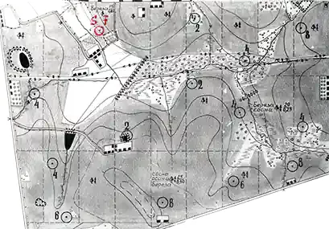
В январе 1966 года ориентировщики впервые вышли на старт в черте города: первенство клуба туристов Первомайского района по инициативе Г. Чалова провели в Измайловском лесопарке📍, и газетная заметка, сохранённая в архиве O-Maps, насчитала более 300 лыжников из 22 коллективов. В марте на матче 15 городов под Ленинградом москвички Галина Илларионова, Антонина Шеленкова и Сталина Соколова выиграли женскую эстафету на маркированной трассе со штрафными кругами, и сборная Москвы впервые стала первой в общекомандном зачёте всесоюзного старта. В мае у платформы Ромашково Евгений Кривокор придумал вечерние тренировки «Четверг здоровья». А в июле под Загорском, у Торбеева озера, прошёл IV матч восьми городов📍: заняв первые два места в заданном направлении, В. Игнатенко и Виктор Мохов выполнили норматив мастера спорта. Звания им присвоили в январе 1967 года, вместе с первыми москвичами — судьями всесоюзной категории В. Н. Кудрявцевым, А. А. Колесниковым, И. Б. Плотке и Е. С. Риневичем. Хроника ФСОР называет первыми российскими мастерами спорта двух москвичей и ленинградок Людмилу Фомичёву и Ольгу Малову (Казанцеву), а в календаре O-Maps победителями загорского матча записаны Фомичёва и Игнатенко; подробнее — в статье об ориентировании в России и СССР.
С 1 января 1967 года у москвичей появилось своё помещение — в клубе туристов Ленинского района в Серповом переулке, где работали комиссии и консультировали организаторов. 10–12 марта Москва принимала матч 15 городов: личные соревнования на маркированной трассе начинались у разъезда Дубосеково, где в 1941 году сражались панфиловцы, эстафета прошла в Битцевском лесопарке у базы «Красный маяк». Летом председатель Центральной секции В. Н. Кудрявцев был приглашён на IV конгресс Международной федерации ориентирования (IOF) в Австрию, а Андрей Кирчо смастерил один из первых самодельных жидкостных компасов и опубликовал чертежи в журнале «Турист»; в 1968 году Юрий Алмазов и Владимир Жучков наладили выпуск самодельных компасов, не уступавших, по хронике ФСОР, шведским и финским.
Главный успех десятилетия пришёлся на зиму. 1–3 марта 1968 года под Калугой прошли первые Всесоюзные зимние соревнования команд союзных республик и городов РСФСР, и сборная Москвы, которую готовил Анатолий Казаков, их выиграла: Станислав Елаховский стал чемпионом, а обе эстафеты остались за москвичами (Л. Владимирова, Н. Огородникова, С. Соколова и С. Елаховский, Г. Воронцов, В. Игнатенко). Хронология o-moscow.ru пишет о трёх победах из четырёх видов программы, сборник ФСОР — о четырёх первых местах и 14 очках отрыва от второй команды, Свердловска. Тогда же на Кубке Москвы у Колюбакино появились карты с затемнёнными открытыми участками.
1969 год дал Москве сразу несколько долгоживущих стартов. С. Елаховский придумал «Встречу поколений» с гандикапом по возрасту, секция МВТУ провела соревнования памяти погибшей на Памире спортсменки Татьяны Соколовой — из них выросли общемосковские «Памяти друзей», а на закрытии сезона у Круглого озера📍 разыграли «Золотые кольца», со временем ставшие эстафетой супружеских пар. Москвичи А. Бушинский, Н. Калиткин, В. Крутицкий, Р. Кузьмин и В. Самойлов под руководством В. Алёшина готовили дистанции IV Всесоюзных соревнований под Брянском. Массовость росла: на Кубок Москвы в феврале 1970 года вышли 600 человек.
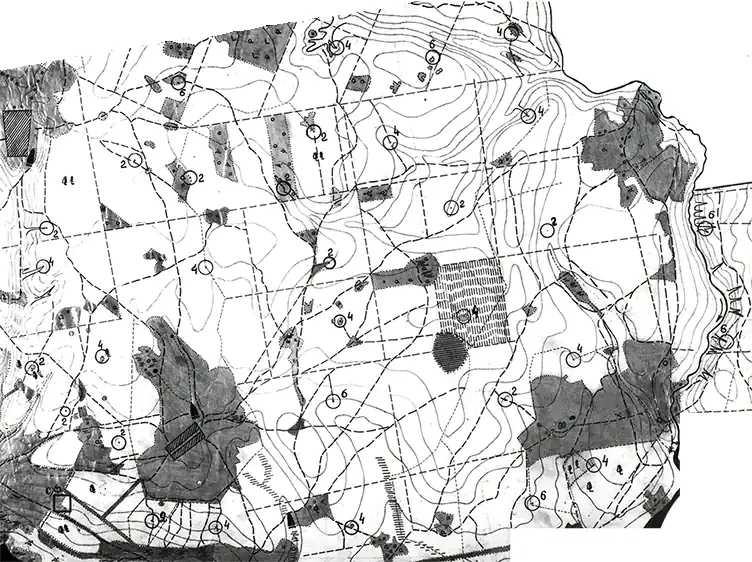
1970-е: телевизионные призы, спортшкола и федерация
Самым известным изобретением московских ориентировщиков стали соревнования на призы Центрального телевидения. Первые прошли 24 мая 1970 года в Измайловском лесопарке: участники пользовались картой и информацией, опубликованными в газете «Московская спортивная неделя». Инициатором был Борис Огородников, главным судьёй — Б. Томсон. Каждую весну старты шли в разных парках, их показывал Первый канал, и, по странице Огородникова на o-moscow.ru, продолжались до 1999 года; сборник ФСОР говорит о тридцати годах и до тысячи участников (подробности — в очерке Б. И. Огородникова «Незабываемый телесериал»). По его же сценариям сняли фильмы «Спортивное ориентирование» (1975, сто копий разослали в вузы всех республик) и «Ориентируйся на местности» (1978). В 1970 году вышло и первое отечественное пособие по организации стартов — «Судейство соревнований по ориентированию на местности» В. Алёшина, Е. Иванова и А. Колесникова.
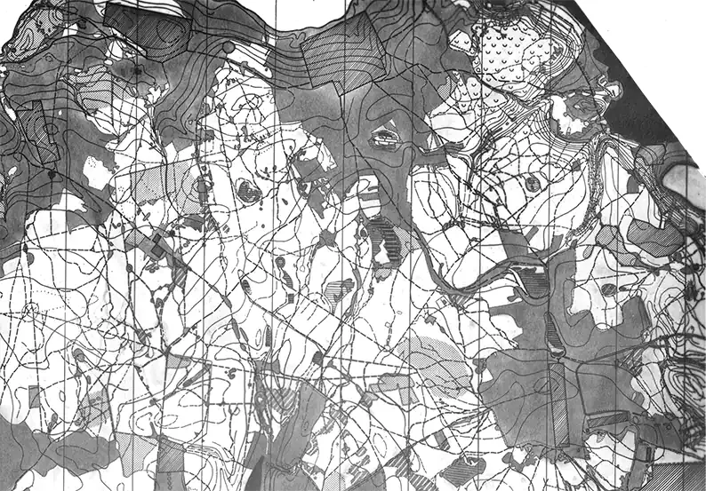
На всесоюзных трассах москвичи по-прежнему сильнее всего были зимой: в 1971 году в Казани золото выиграли Лидия Куклина и Станислав Елаховский, а эстафету — З. Смыкодуб, Т. Калашникова и Л. Куклина. В феврале 1972 года у Планерной прошёл первый открытый зимний чемпионат столицы в заданном направлении📍 с иногородними участниками; у женщин победила Л. Куклина. Той же зимой на Кубок Москвы вышли свыше 600 москвичей из 27 районных секций и 115 гостей из Горького, Куйбышева, Обнинска, Тулы и других городов, а юбилейный десятый чемпионат осенью 1972-го пришлось отменить из-за лесных пожаров на востоке области.
Десятилетие московского ориентирования отметили 19 мая 1973 года стартом «Старая карта» у деревни Баранцево на Пятницком шоссе: дистанцию построили по образцу трассы десятилетней давности, участники заложили капсулу с пожеланиями и посадили ели на «Поляне ориентировщиков». Евгений Грановский, Лев Станецкий и Б. Томсон выпустили сборник «Московскому ориентированию — 10 лет» (в хронологии — «Спортивному ориентированию в Москве — 10 лет»), а Елаховский — книгу «Бег к невидимой цели». 17 ноября 1973 года Николай Куницын перед уходом в армию провёл у Зосимовой Пустыни «Осенний призыв»📍 — старт в формате рогейна с форой по разрядам, позже возрождённый им как «Осенние встречи».
В середине десятилетия выросла детская школа. В январе 1974 года по инициативе Дмитрия Никифорова прошли первые «Новогодние старты» для воспитанников спортшкол и домов пионеров Москвы, Ленинграда, Риги, Челябинска и других городов, а в Перовском районе открылась первая в Москве детско-юношеская спортшкола с отделением ориентирования (по хронике ФСОР на rufso.ru — в сентябре, по хронологии o-moscow.ru и сборнику ФСОР — в декабре 1974 года); старшим тренером стал энтузиаст детского ориентирования Юрий Никаноров, с 1978 года школу вела Зинаида Смыкодуб. Сегодня это СДЮСШОР «Ориента». Из школьного ориентирования пришли лидеры конца десятилетия — Ольга Мухина и Сергей Симакин: в 1975 году в Миассе Симакин первым из россиян выиграл мужской зачёт всесоюзных соревнований, Мухина в том же году выиграла всероссийские соревнования в Касимове (хроника ФСОР), а в списке кандидатов в сборную СССР на 1977 год от Москвы значились только они двое.
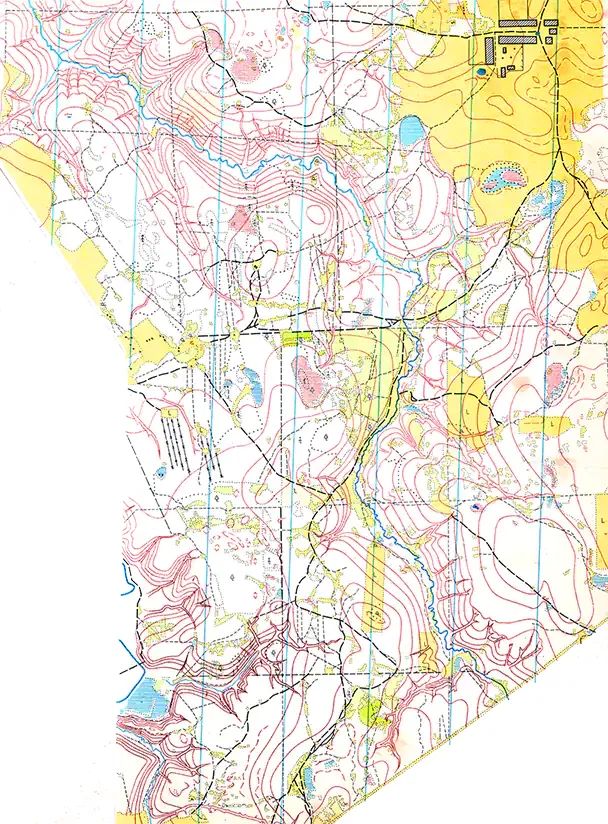
1975 год запомнился двумя международными событиями. В мае Москва принимала седьмой матч команд городов-героев — с дистанциями у Волоколамска и Калистово и церемонией открытия на Красной площади; москвичи выиграли и личные виды, и общий зачёт. Летом у деревни Дьяково прошёл первый день матча армейских сборных СССР и Франции (второй день — под Ленинградом), и спортсмены впервые получили карту в цветном исполнении; сборник ФСОР называет её авторов — бригаду Владимира Крутицкого. Через год, в 1976 году, В. Н. Кудрявцев и Б. И. Огородников обсуждали с президентом IOF вступление СССР в международную федерацию, а московская бригада Алёшина готовила под Псковом карты первого Кубка дружбы социалистических стран, из которых вырос центр «Алоль».
Отрыв ориентирования от туризма закрепили приказом Спорткомитета СССР № 702 (июль 1977 года) и приказом Мосгорспорткомитета № 138-а. 30 ноября 1977 года конференция в спорткомитете Москвы учредила Федерацию спортивного ориентирования города; её первым председателем избрали мастера спорта, кандидата технических наук, преподавателя Военной академии им. Дзержинского Сергея Манцерова (он руководил федерацией до 1986 года). Всесоюзная федерация появилась только в апреле 1979-го, и председателем её стал москвич, генерал-лейтенант Иван Лисов. 10 марта 1978 года московские ветераны создали первую в стране секцию ветеранов ориентирования, а 15 ноября 1979-го — клуб ветеранов, тоже первый в СССР (хроника ФСОР); организатором был Владислав Мартишев. В августе 1979 года в Подмосковье, на берегах Осётра у турбазы «Сатурн» Луховицкого района, прошли I Всесоюзные соревнования среди ДЮСШ.
1981–1991: чемпионаты СССР и путь в IOF
Олимпийский 1980 год москвичи встретили циклом «Олимпийские тропы»: около 900 спортсменов бегали у олимпийских объектов — в Битцевском лесопарке, вдоль велотрассы в Крылатском, на Ленинских горах. На I чемпионате СССР под Выборгом в 1981 году сборная Москвы, подготовленная Н. Куницыным, заняла второе общекомандное место вслед за ленинградцами, а мужская эстафета (С. Лавренюк, Виктор Сотников, С. Симакин) — третье. Главным судьёй того чемпионата был И. И. Лисов. Дальше пошли неудачи: в 1983 году в Цесисе Москва без сильнейших едва сохранила место в группе «А», и мастер спорта Анатолий Шигаев разобрал провал в статье «На краю высшей лиги» в «Спортивной Москве».
Зато вширь ориентирование росло стремительно. По справке Мосгорспорткомитета, число коллективов физкультуры, где им занимались, выросло с 90 в 1981 году до 305 в 1984-м, а число занимающихся — с 3 520 до 8 950. В клубе «Компас» еженедельника «Спортивная Москва» (1982–1984) Б. Огородников давал слово десяткам тренеров и спортсменов, в 1983 году вышла книга Алёшина «Карта в спортивном ориентировании», а в 1985-м спорткомитет и Главное управление геодезии и картографии договорились издавать спортивные карты лесопарков для продажи в книжных магазинах. С декабря 1981 года ветераны проводят «Рубеж славы» в память о битве под Москвой.
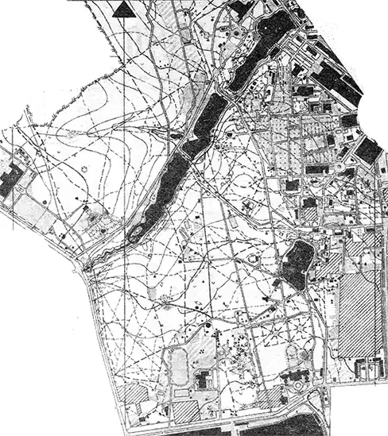
В середине десятилетия пришли и медали. В 1985 году на V чемпионате СССР под Черновцами мужская эстафета Москвы — Пётр Саврухин, Михаил Лавренюк, С. Симакин и Иван Кузьмин — стала чемпионом страны. В октябре 1985-го Кубок Москвы впервые провели в черте города, в Филёвском парке у стадиона «Конструктор», а в марте 1986 года на Кубке СССР, разыгранном на Клинско-Дмитровской гряде у деревни Борносово, И. Кузьмин выиграл заданное направление. Летом 1986 года XIII конгресс IOF принял Советский Союз в международную федерацию (в работе конгресса участвовал С. Елаховский), а в августе Всесоюзная федерация глухих и московская федерация впервые в практике международных встреч проложили трассы прямо в городе — в Крылатском. В ноябре 1986 года председателем федерации Москвы стал Н. Н. Куницын.
На чемпионатах СССР 1987–1990 годов москвичи в беге остались без призовых мест и в сборную страны на чемпионаты мира не попали. Сильнее всего они оказались на лыжах: И. Кузьмин в 1988 году стал первым в стране мастером спорта международного класса по ориентированию среди мужчин (тренер — Лев Крохин; у женщин в том же году — Валентина Близневская из Красноярского края), в 1989-м ориентирование на лыжах вошло в программу XI зимней Спартакиады Москвы, а на последнем, III зимнем чемпионате СССР в 1991 году чемпионом в заданном направлении стал москвич Игорь Звонцов. В сентябре 1988 года газета «Известия» сообщила о снятии грифа секретности с топографических карт, что открыло картографам доступ к точным основам. Осенью 1989-го председателем Федерации спортивного ориентирования СССР избрали Б. И. Огородникова, в январе 1991 года федерацию Москвы возглавил Александр Красовский, а Дмитрий Никифоров и Андрей Лосев выпустили первый номер «Информационного вестника спортивного ориентирования» — «О-вестника».
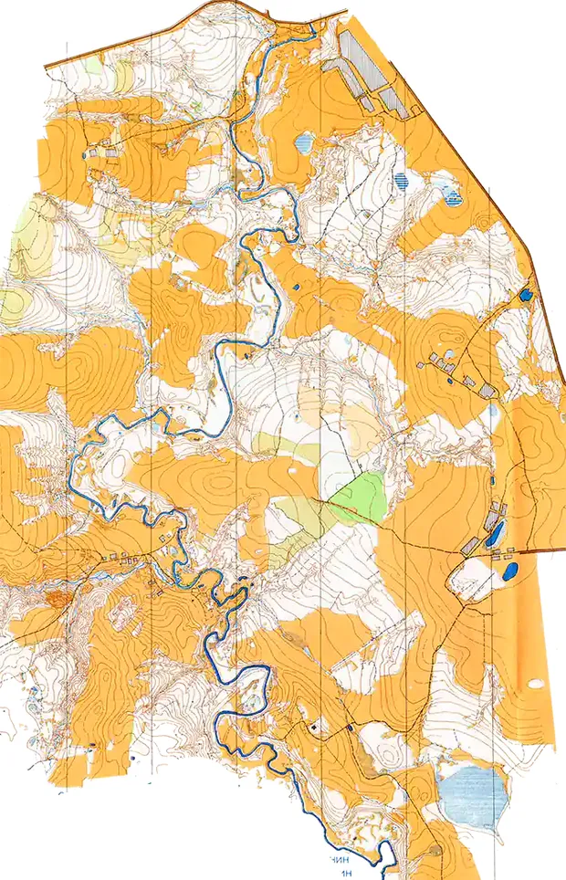
Конец советской эпохи стал временем рекордного числа новых карт: в архиве O-Maps 1980-м годам принадлежат 59 московских и подмосковных карт, из них 18 датированы 1989 годом. Больше всего карт десятилетия в архиве у Евгения Голдырева (6), Бориса Левина (5), Сергея Стулова, Павла Потапкина и Игоря Фомина (по 4); среди авторов также Сергей Гундоров, Владимир Кузнецов, С. Симакин, Ирина Куранова, В. Сидоренко и А. Красовский, а коллективы во главе с Алёшиным и Рэмом Кузьминым готовили большие лесные районы. В марте 1991 года учредительная конференция в спорткомплексе «Битца» приняла новый устав союзной федерации, а в апреле в Москве прошёл всесоюзный семинар судей, практикой для которого стали массовые вечерние «Тропарёвские четверги».
1990-е: эстафеты Рахимовой, золото Кузьмина и старт у Кремля
После распада СССР последнее заседание президиума союзной федерации прошло в Москве 28 апреля 1992 года, и всю работу взяла на себя Всероссийская федерация спортивного ориентирования, учреждённая 27 ноября 1991 года (с 1996 года — Федерация спортивного ориентирования России). Для москвичей новая эпоха началась победой: на первом чемпионате России в Волгоградской области мужская и женская эстафеты столицы выиграли золото (Ирина Медведева, Надия Чуприна, Светлана Рахимова; Константин Володин, Сергей Баландинский, Владимир Козлов), и Москва получила главный командный приз. С этого старта, пишет сборник ФСОР, началась «победная поступь» женской эстафеты — И. Медведевой, Н. Чуприной, М. Сибилёвой и Светланы Рахимовой (Горбатенковой), шесть раз выигрывавших чемпионат России; сама Рахимова выступала на чемпионатах мира и этапах Кубка мира. Зимой 1995 года сборная Москвы выиграла общий зачёт и лыжного чемпионата России в Велегоже.
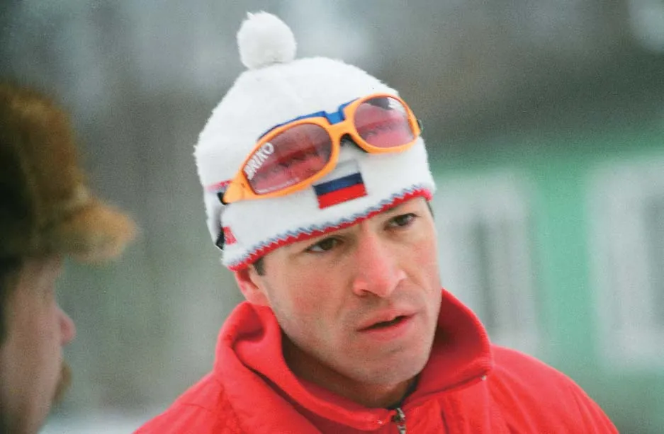
Мировой уровень первым покорил лыжник Иван Кузьмин. На чемпионате мира 1992 года во Франции он выиграл две бронзы и серебро эстафеты, а в феврале 1994 года в Италии разделил первое место на короткой дистанции с итальянцем Николо Коррадини (так в Википедии и хронологии o-moscow.ru; в календаре O-Maps эта гонка записана как средняя дистанция) и стал первым российским чемпионом мира по спортивному ориентированию. Его тренерами сборник ФСОР называет Л. Крохина и Д. Никифорова. Звание заслуженного мастера спорта Кузьмину присвоили первым в российском ориентировании (по хронологии o-moscow.ru — в апреле 1996 года, по хронике ФСОР — в 1997-м, когда Лев Крохин стал и первым заслуженным тренером России по ориентированию). В Подмосковье вырос и чемпион мира 1998 года на лыжах Виктор Корчагин — в Виндишгарстене он выиграл длинную дистанцию и эстафету; с 1970 года его семья жила в Раменском, а тренировался он в СДЮШОР Лыткарино у Н. Н. Кудряшова.
Внутри страны москвичи снова собирали медали: на чемпионате России 1996 года в Псковской области классику выиграла Майя Чернушка, удлинённую дистанцию — Игорь Горбатенков (календарь O-Maps, по плакату ФСОР). Президентом федерации Москвы в декабре 1996 года снова избрали Н. Куницына. В августе 1997 года в Бутово прошёл фестиваль ориентирования к 850-летию Москвы; страница 1997 года хронологии o-moscow.ru называет его частью «первый чемпионат России по велоориентированию», хотя на странице 1996 года, как и в хронике ФСОР, первым считается старт в Лемболово 13–15 сентября 1996 года, где победил В. Корчагин. В октябре 1997 года отчётная конференция ФСОР в киноконцертном зале «Октябрь» отметила 100-летие мирового ориентирования.
Подросло и новое поколение «Ориенты». В 1998 году Руслан Грицан, ученик Натальи Моросановой, выиграл две дистанции на юниорском лыжном первенстве мира в Велегоже, а Татьяна Переляева, ученица Вячеслава Костылева, во Франции стала первой российской чемпионкой мира среди юниоров в беге (хроника ФСОР); в 1999 году она выиграла с командой эстафету, а в 2000-м — классику и эстафету (хронология o-moscow.ru для 1999 года называет ещё и победу в спринте, по таблицам Википедии её не было). Екатерина Чижикова, воспитанница Людмилы Чижиковой, в 1998-м выиграла спринт взрослого лыжного чемпионата России в Орехово, а в 2000–2002 годах стала чемпионкой мира среди юниоров. В январе 1998 года в посёлке Ильичёво сыграли традиционный матч Москвы и Московской области против Санкт-Петербурга и Ленинградской области в формате «100 на 100»: москвичи выиграли со счётом 12 187:12 163.
Самым зрелищным стартом десятилетия стал забег 29 августа 1999 года у стен Кремля, на Васильевском спуске📍, в программе XIX Московского международного марафона мира. Хроника ФСОР называет его организаторов — В. Л. Елизарова, Ю. С. Константинова, Н. Н. Куницына и И. И. Столова, а хронология o-moscow.ru — победителей, Марину Христеву и Максима Рябкина. В том же 1999 году дебютировала межокружная Спартакиада Москвы, где ориентирование со временем стало обязательным видом, а в Олимпийском центре «Планерная» прошёл лыжный чемпионат России среди клубов — его выиграла «Ориента».
2000-е: велосипеды, «Лабиринт» и чемпионат мира в Химках
В 2000-е годы москвичи впервые стали выигрывать чемпионаты мира регулярно. Руслан Грицан трижды побеждал в эстафете лыжных чемпионатов мира (2002, 2004, 2005), а в Леви в 2005 году разделил с Андреем Груздевым золото средней дистанции. В том же году он пересел на велосипед и в Банска-Бистрице выиграл среднюю и длинную дистанции, став первым российским чемпионом мира по велоориентированию; всего, по Википедии, у него девять титулов чемпиона мира на велосипеде. В 2006 году в Йоэнсуу женскую эстафету выиграли Надия Микрюкова (воспитанница З. Смыкодуб), Анна Устинова и Ксения Черных (ученица Алексея Кузьмина) — первые российские чемпионки мира на велосипедах, а в 2007-м в Нове-Место-на-Мораве Черных выиграла спринт и среднюю дистанцию. На первом юниорском первенстве мира по велоориентированию в Польше в 2008 году золото выиграли москвички Татьяна Репина и Светлана Поверина.
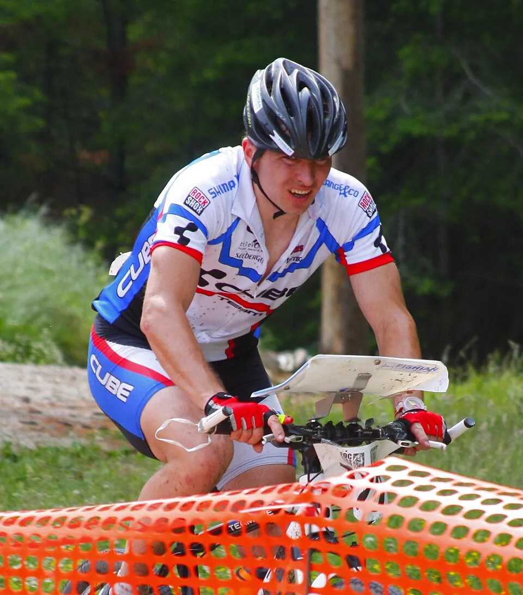

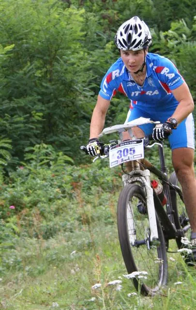


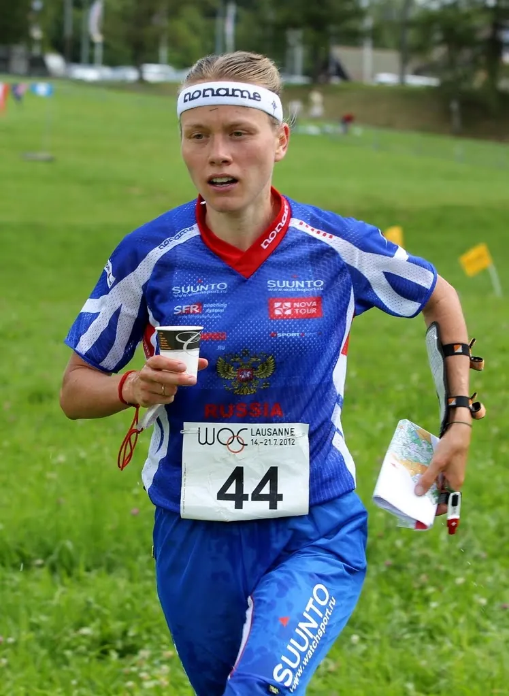
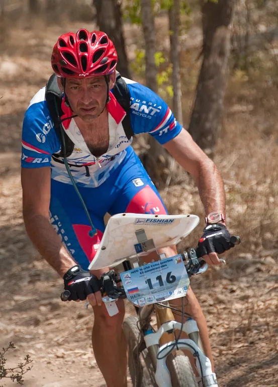
В беге лидером стала Татьяна Рябкина (Переляева): серебро средней дистанции на чемпионате мира 2004 года в Вестеросе и бронза в 2006-м, бронза эстафеты чемпионата Европы 2004 года (вместе с серебром мужской эстафеты на чемпионате мира того же года — первые российские медали в эстафетах в беге) и, по хронике ФСОР, первая медаль российских ориентировщиков на Всемирных играх (серебро смешанной эстафеты, Дуйсбург, 2005). Тренировал её В. Костылев.
В городе тем временем придумывали новые форматы. В апреле 2002 года Максим Рябкин провёл первое в Москве и России «Ориент-шоу» — соревнования по мини-ориентированию, тогда же стартовал семиэтапный «Кубок парков». Организаторы «Московского компаса» в Лыткарино пишут, что в 2003 году впервые в России применили на массовых соревнованиях электронную отметку SportIdent, а в 2004-м показали зрелищную врезку-дистанцию «Лабиринт», автором которой называют генерального директора С. Хропова. Спортивный лабиринт — короткие дистанции среди заборчиков на небольшой площадке — стал самостоятельным видом соревнований; в сентябре 2006 года его ставили даже на ВДНХ.
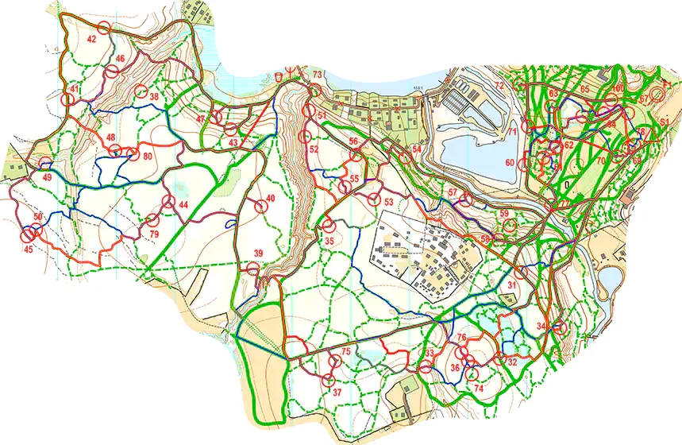
Главным международным стартом в истории Москвы стал чемпионат мира по ориентированию на лыжах 2007 года📍. Его провели на окраине Москвы, в Химках, в районе Планерной (по «Азимуту» — 22 февраля — 2 марта, по календарю O-Maps — 23 февраля — 3 марта), а службу подготовки дистанций возглавлял Виктор Алёшин. Сборная России выиграла все восемь золотых медалей: по три личных титула у Татьяны Власовой и Эдуарда Хренникова и обе эстафеты. Оценки организации разошлись: «Азимут» (2007, № 2) предоставил слово иностранцам, и контролёр IOF Юрай Немец похвалил «компактные и интересные соревнования», формат которых «вполне соответствовал Олимпийским требованиям», но признался: «Это была моя самая трудная О-работа». Главной проблемой он назвал внезапную смену размещения команд: жившие в Новогорске оказались в неравных условиях, их питание и транспорт были плохо организованы. Подробнее о чемпионате — в статье о чемпионатах мира на лыжах.
2010–2020-е: город как стадион
За последние полтора десятилетия московское ориентирование переселилось с подмосковных лыжных баз в городские кварталы. В архиве O-Maps у 2010-х годов 134 московские карты, у 2020–2026-х — уже 273, и доля парков, городских кварталов и спринтерских районов в них растёт (диаграмма). В 2015 году появились карты Кремля, Лефортовского и Перовского парков для бесплатной городской игры «Инакор», а в 2026-м — спринтерская карта центра от Чистых прудов до Красных Ворот📍.
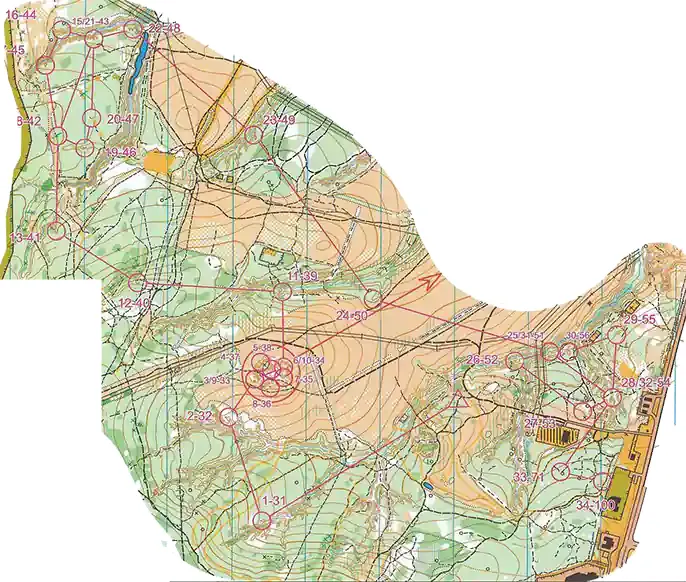
Москва снова стала принимать чемпионаты страны. В мае 2012 года здесь прошёл чемпионат России📍 в спринте и общем старте, а 12–13 октября 2013 года в Бутовском лесопарке — ещё один📍, вместе с открытыми соревнованиями «В честь 50-летнего юбилея спортивного ориентирования» («Лесные новости»). К юбилею вышла книга Ю. С. Константинова «Из истории отечественного спортивного ориентирования. 1963–2013», а москвич Александр Прохоров, бывший президент федерации Москвы и генеральный секретарь ФСОР, первым в российском ориентировании получил звание «Почётный спортивный судья России». Татьяна Рябкина в 2012 году выиграла эстафету чемпионата Европы и шведскую многодневку O-Ringen, а в 2016-м москвич Глеб Тихонов вошёл в состав сборной России, выигравшей на чемпионате Европы первую в его истории смешанную спринтерскую эстафету.
Москва и Подмосковье регулярно принимают чемпионаты России по велоориентированию (или часть их программы): они прошли в Москве в 2016📍, 2017📍, 2021📍 и 2024 годах📍, в Томилинском лесопарке📍 (2020) и в Химках (2023📍 и 2026📍). В 2016 году команда Москвы выиграла командный зачёт и у мужчин, и у женщин, в 2017-м общий старт📍 выиграли Р. Грицан и С. Поверина, в 2021-м мужская эстафета Москвы (Павел Радыванюк, Р. Грицан, Григорий Медведев) стала первой📍. Лыжный чемпионат России в 2020 году принимали Люберцы📍, а спринтерский Кубок России 2024 года — Химки.
С 2022 года членство ФСОР в IOF приостановлено, и московские спортсмены выступают в собственном календаре. Сейчас в московском календаре O-Maps 1 443 записи (1958–2027). За 2025–2027 годы приходится 572 события: 259 в 2025-м, 307 в 2026-м и 6 в 2027-м. Среди общих записей — от соревнований туристов 1958 года у Тучково до чемпионатов, первенств и кубков России и всероссийских соревнований; здесь же «Слёт ориентировщиков», который в календаре значится ежегодно с 2016 года, и всероссийские «Новогодние старты». Больше всего этапов в 2026 году у «Московского Меридиана» (44); сезонные серии «Московская весна», «Московское лето» и «Московская осень» насчитывают 37, 36 и 36 этапов за 2025–2026 годы (считая этапы, совмещённые с Moscow Sprint Tour, и ночной этап). Среди остальных — чемпионаты и первенства Москвы, Moscow Sprint Tour, Moscow City Race, ночные старты и нанорогейны. Федерацию спортивного ориентирования Москвы сегодня возглавляет Максим Капитонов, вице-президент и старший тренер сборных — Александр Тремпольцев (сайт ФСОМ).
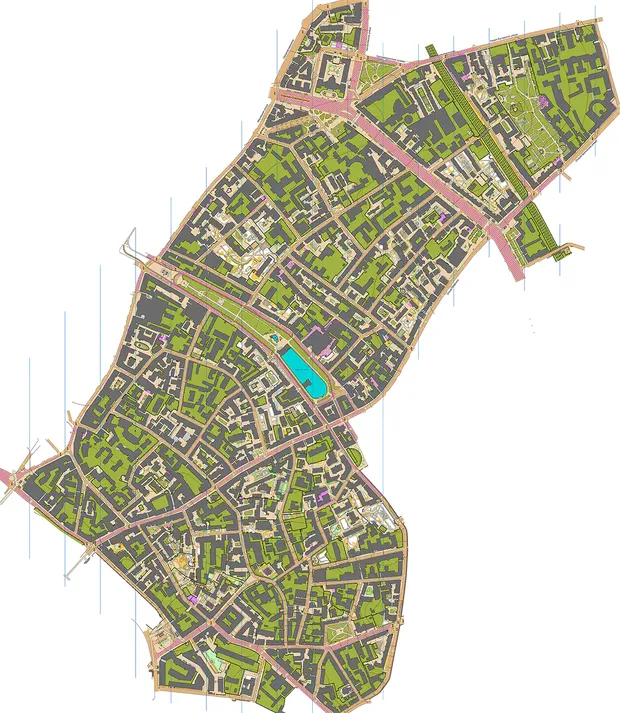
Диаграмма показывает ритм городского сезона: зимой — лыжные старты и нанорогейны, с апреля по октябрь — вечерние «Меридианы» и выходные серии. За ним стоят клубы и спортшколы, история которых началась в 1970–1990-е годы: «Ориента» с её отделениями, «Искатель», «Фотон», «Малахит», «Мысль», «Лосиный остров» и другие.
Массовые старты: от «Первого старта» до «Московского Меридиана»
Москва всегда была городом традиционных соревнований для всех. «Первый старт» для новичков у платформы Радищево проводили с декабря 1965 года (в 1983-м — уже двадцатый раз), призы Центрального телевидения собирали в лесопарках до 1 200 участников (Ясенево, 1987), а «Рубеж славы» с 1981 года посвящён битве под Москвой. «Золотые кольца» (с 1969 года) — это двухэтапная эстафета супружеских пар с возрастным гандикапом (старт на O-Maps), «Памяти друзей», которые с 1985 года много лет организовывал Н. Куницын (1947–2019), по словам сборника ФСОР, собирали около тысячи участников при любой погоде. «Золотой осенью» назывался марафон на удлинённых дистанциях (в архиве O-Maps есть его карты 1965📍 и 1976 годов📍), а позднее под тем же названием стали проводить комбинированную эстафету, инициатором которой o-moscow.ru называет Тамару Бортновскую; она проходит и сейчас — в календаре O-Maps есть её старты в Кусковском парке в 2025 и 2026 годах.

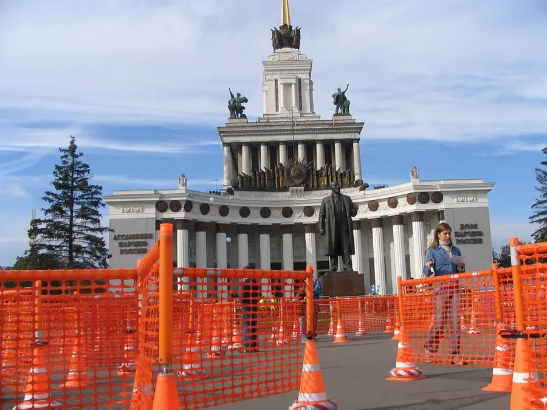
Многие из нынешних серий родились в 1990-е и 2000-е. «Московский компас» начинался в 1989 году как открытое первенство Лыткарино, а с 1993-го его титульным спонсором стала фирма «Московский компас», одним из основателей которой был тот самый Юрий Алмазов; в разные годы старт был этапом Кубка России и ранговым стартом IOF (история соревнований). «Покровская снежинка» проводится с 1996 года, One Man Relay — с 1998-го (рекорд — 1 349 участников в 2017 году), Кубок клубов — с 2005-го (рекорд — 1 611 в 2022 году, чаще всех побеждал клуб «Ориента-Ski-O»), ночные соревнования памяти А. С. Горюнова — с 2008-го, «День космонавтики» — с 2014-го (1 074 участника в 2017 году); их результаты и карты собраны на странице «Традиционные старты» o-moscow.ru.
Самая долгая серия — вечерний «Московский Меридиан», весенние и осенние этапы которого проходят по будним дням прямо в городских парках с 1997 года. По статистике o-moscow.ru, за это время прошло 1 232 старта, в них участвовали 22 121 человек, а рекорд — 2 271 разный участник за 2014 год. По словам сборника ФСОР, «Меридиан» позволил сотням москвичей много месяцев подряд тренироваться по вечерам в парках и лесных массивах прямо в городе, и «парковое ориентирование» стало популярным. В календаре O-Maps этапы «Меридиана» записаны за Николаем Сытовым, автором многих карт московских парков.
Рогейн: москвичи на длинных дистанциях
Соревнования «по выбору», где за контрольное время надо набрать как можно больше очков, в Москве знали задолго до слова «рогейн»: так был устроен Кубок Москвы 1970 года у деревни Рождественно, а «Осенний призыв» 1973 года хронология o-moscow.ru прямо называет стартом «в формате рогейна». Когда в 2000-е годы в России начались настоящие чемпионаты по рогейну, москвичи оказались среди сильнейших. Олег Калинин выигрывал чемпионат России в 2005 и 2006 годах с Сергеем Ященко (в 2005-м оба выступали за Москву), в 2008-м с Сергеем Юткиным, в 2009–2010 годах с Евгением Домбровским, в 2013–2014 годах с Андреем Шведовым, в 2016-м с Константином Соловьёвым (перечислены абсолютные победы); в 2006 году Калинин и Ященко стали абсолютными чемпионами Европы, а на чемпионатах мира 2008, 2012, 2014 и 2016 годов Калинин четырежды брал бронзу в мужском зачёте (календарь O-Maps).
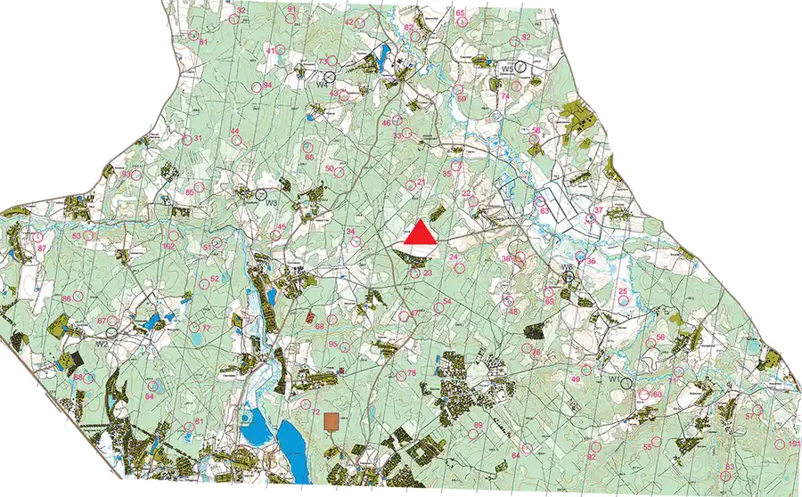
Подмосковье трижды принимало национальные чемпионаты: в 2008 году у Сенежа («Золото Сенежа»📍, 109 команд, 236 участников; победили Олег Калинин и Сергей Юткин из «Омеги»), в 2013-м зимний чемпионат на лыжах у ДОЛ «Энергия» в Солнечногорском районе (абсолютными победителями📍 стали москвичи А. Шведов и Наталья Абрамова), а в 2014-м — у деревни Алфёрово📍 Павлово-Посадского района. Наталья Абрамова в паре с Анной Шавлаковой выиграла в 2015 году женский зачёт чемпионата мира в Лапландии. Подробнее о российском рогейне — в статье «Рогейн в России».
Сегодня рогейн в Москве — это кубок «Компот-рогейн» бегом, на велосипеде и на лыжах и «Московский лайт» той же команды «Компот групп», «Нано-Подкуст» (16 этапов в календаре 2025–2026 годов, в основном зимних), Московский нанорогейн (с 2019 года) и рогейны по сводным картам вроде «Большой Битцы»📍. В архиве O-Maps 81 карта типа «рогейн» в разделе Москвы, из них 77 — в Москве и Подмосковье, ещё четыре — во Владимирской и Калужской областях.
Картографы Москвы
Путь от синьки до цифровых карт городских кварталов московские картографы прошли за полвека. В 1959 году участники бежали по увеличенной топооснове 1922 года, в 1964-м В. Игнатенко частично откорректировал карту, в 1965-м В. Алёшин выпустил первую полностью перерисованную вручную карту, в 1968-м на Кубке Москвы затемнили открытые участки, в 1975-м бригада В. Крутицкого сделала первую цветную карту. Алёшина на o-moscow.ru называют основоположником спортивной картографии: он руководил комиссией по картам Центральной секции, был автором трудов по подготовке карт и стал генеральным инспектором ФСОР. В конце 1970-х Ирина Куранова выпустила одну из первых цветных карт кусочка Битцевского леса, а в 1989 году первой из наших картографов побывала на международном семинаре по компьютерной картографии в Швеции. Андрей Лосев стал инициатором цифровой печати многоцветных карт.
Диаграмма показывает, что архив O-Maps отражает московскую историю неравномерно: карты 1960–1970-х годов сохранились единицами, а 2020-е годы уже обогнали любое прежнее десятилетие, и больше всего прибавили парки, городские кварталы и рогейны. Из 713 карт раздела у 181 автор не указан, остальные нарисовали 158 картографов. Среди ветеранов — Сергей Симакин (его карты в архиве датированы 1976–2025 годами), Владимир Люк (с 1989 года), Рэм Кузьмин, Евгений Голдырев, Вячеслав Окин, Сергей Стулов из Лыткарино, Борис Калинин, Юрий Янин; самые плодовитые нынешние авторы — Александр Минаков, Владимир Тутынин и Алексей Зуев.
Сохранить старые карты помогли энтузиасты: сканы для o-moscow.ru делали Виктор Быркин, Алексей Ермаченков и студенты секции МИФИ, бумажные карты передавали ветераны, а архив Федерации спортивного ориентирования Москвы собирали Галина Еремеева, Татьяна Рязанская и другие (источники o-moscow.ru). Карты лесопарков Москвы публикуют также «Архивчик спортивных карт» Дмитрия Касаткина и O-GPS-Center, а на O-Maps все они собраны на карте раздела «Москва».
Руководители, тренеры и летописцы
Сборник ФСОР перечисляет тех, кто в разные годы возглавлял московскую комиссию, секцию и федерацию: А. Ярышев, В. Алёшин, В. Добровольский (председатель секции в 1969–1970 годах), Е. Пепеляев, С. Ржищин — бронзовый призёр Олимпийских игр 1960 года в беге на 3000 м с препятствиями, С. Манцеров, А. Красовский, Н. Куницын и А. Прохоров; сегодня федерацию возглавляет М. Капитонов. На всесоюзном уровне москвичами были руководители и Центральной секции (В. Н. Кудрявцев, 1962–1979), и Федерации СССР (И. И. Лисов, Б. И. Огородников), а Виктор Елизаров, первый вице-президент ФСОР в команде С. Г. Беляева, был учредителем и шеф-редактором журнала «Азимут». Большое влияние на подготовку сборной Москвы, по словам сборника, оказывал штатный работник спорткомитета, мастер спорта Владимир Кривоносов.
Детское ориентирование в Москве начинали Валентин Куликов, руководивший потом Московской городской станцией юных туристов, и учитель географии физико-математической школы № 2 Алексей Макеев, воспитавший братьев Лавренюков, Юлию и Марию Ким, А. Вышкварко. СДЮСШОР «Ориента» много лет возглавлял Алексей Кузьмин; заслуженными тренерами России стали Наталья Моросанова, Зинаида Смыкодуб, Вячеслав Костылев, Ольга Глаголева, многолетний старший тренер юношеских и юниорских сборных России, Людмила Чижикова, после гибели И. Курановой в 1998 году возглавившая спортшколу, выросшую из клуба «Фотон», руководитель старейшего клуба «Искатель» Сокол Слободник и Алексей Иванов со станции юных туристов.
Историю московского ориентирования записывали сами участники. Б. Ю. Томсон составил сборники «Пролог» (2005) и «Из века в век переходя» (2008), Б. И. Огородников — рекордсмен по числу публикаций о «лесном спорте», Е. И. Иванов писал книги о судействе и подготовке новичков, Ю. С. Константинов собрал для ФСОР книгу «Из истории отечественного спортивного ориентирования» с главой о регионах. Сегодня эту работу продолжает сайт o-moscow.ru с хронологией 1958–2003 годов, страницами почти трёхсот людей и статистикой традиционных стартов; на странице источников сайт благодарит Сергея Шорохова за идею его создать, Владимира Люка — за хранение архивов, а Татьяну Рязанскую — за помощь в работе с ними.
Вместо заключения
За шестьдесят с лишним лет московское ориентирование прошло путь от туристских слётов с рюкзаками до одного из самых насыщенных календарей в стране. Москва дала первых российских чемпионов мира на лыжах и на велосипедах, приняла чемпионат мира 2007 года и не меньше 13 чемпионатов России (с 2008 года, считая рогейн), а её массовые серии — от «Первого старта» до «Московского Меридиана» — каждый год приводят в лес и в парки тысячи людей.
Сегодня главное поле московского ориентирования — сам город: спринты в исторических кварталах, вечерние этапы в лесопарках, нанорогейны и ночные старты. Чемпионаты России по велоориентированию раз за разом приезжают в Москву и Химки, а московский календарь O-Maps на 2026 год насчитывает больше двухсот событий. История тем временем продолжает собираться: хронология o-moscow.ru пока доведена до 2003 года, а старые карты и протоколы постепенно попадают в архив карт и календарь O-Maps.
Статья составлена в ноябре 2026 года. Это компиляция материалов O-Maps и других источников, перечисленных в конце страницы, при её подготовке использовался ИИ. Если вы заметили неточность или можете дополнить рассказ, напишите нам.
Источники
o-moscow.ru — хронология московского ориентирования (годовые страницы 1958–2003, в том числе газетные заметки и протоколы), «Имена», «Традиционные старты» (статистика «Московского Меридиана», Кубка клубов, One Man Relay и других), статьи и репортажи, источники информации; Ю. С. Константинов (составитель), «Из истории отечественного спортивного ориентирования. 1963–2013» и глава «Ориентирование в регионах» (раздел «г. Москва», с. 358–371); Федерация спортивного ориентирования России — история, журнал «Азимут» (2007, № 2, о чемпионате мира на лыжах); Федерация спортивного ориентирования Москвы — mosorient.ru, президиум; история «Московского компаса»; «Лесные новости» moscompass.ru (октябрь 2013); Википедия — статьи о И. Н. Кузьмине, Р. Л. Грицане, В. С. Корчагине, Т. Рябкиной, К. Черных, «Спортивный лабиринт», Лямцино; новости Международной федерации ориентирования (IOF); даты, места, результаты и карты — календарь и архив карт O-Maps (числа о картах и событиях O-Maps в тексте и на диаграммах — по состоянию на 14 ноября 2026 года, архив и календарь продолжают пополняться; карты по десятилетиям, типам и авторам посчитаны без 13 карт, исключённых из статистики раздела); статьи O-Maps об ориентировании в России и СССР, в Ленинграде и Петербурге, чемпионатах мира на лыжах и чемпионатах России по велоориентированию.Указатель имён
Люди, упомянутые в статье. Имя ведёт на основную страницу о человеке (отчество, если известно, — во всплывающей подсказке), за ним — другие источники, цифры в конце — места упоминаний в тексте.
- Алёшин Виктор · «Азимут», об Алоли · карты на O-Maps 1 2 3 4 5 6 7 8
- Алмазов Юрий 1 2
- Архипов Игорь 1 2
- Беляев Сергей · ФСОР · O-Site 1
- Бортновская (Василькова) Тамара 1
- Бушинский Александр · карты на O-Maps 1 2 3
- Васильева Галина 1
- Владимирова (Орлова) Лариса · «Азимут» 1 2 3
- Власова (Наумова) Татьяна · Wikipedia · медальный лист ФСОР 1
- Воронцов Геннадий 1
- Вышкварко Алексей 1
- Глаголева (Аптекарь) Ольга 1
- Голдырев Евгений · карты на O-Maps 1 2
- Грановский Евгений 1
- Грицан Руслан · Wikipedia · «Азимут», 2005 · медальный лист ФСОР 1 2 3 4 5
- Добровольский Виктор 1
- Елаховский Станислав · ФСОР 1 2 3
- Елизаров Виктор 1 2
- Еремеева Галина 1
- Животнева Марина 1 2
- Жучков Владимир 1
- Злацен Михаил 1
- Иванов Алексей 1
- Иванов Денис 1
- Иванов Евгений 1 2 3
- Игнатенко Валерий · карты на O-Maps 1 2
- Казаков Анатолий 1
- Калинин Борис · карты на O-Maps 1
- Калиткин Николай · карты на O-Maps 1
- Кирчо Андрей 1
- Колесников Александр 1 2
- Константинов Юрий · карты на O-Maps 1 2 3
- Корноухова Майя 1
- Корчагин Виктор · Wikipedia · медальный лист ФСОР 1 2 3
- Костылев Вячеслав 1 2 3
- Красовский Александр · карты на O-Maps 1 2 3
- Кривокор Евгений 1
- Кривоносов Владимир 1
- Кривоносова (Куклина) Лидия 1
- Крохин Лев 1 2
- Крутицкий Владимир 1 2 3
- Кудрявцев Владимир · ФСОР · «Азимут», 2014 1 2 3 4
- Кузьмин Алексей 1 2
- Кузьмин Иван · ФСОР, интервью · медальный лист ФСОР 1 2 3 4 5
- Кузьмин Рэм · карты на O-Maps 1 2 3 4
- Куликов Валентин 1 2
- Куницын Николай · «Азимут», к 70-летию · карты на O-Maps 1 2 3 4 5 6
- Куранова Ирина · карты на O-Maps 1 2 3
- Лавренюк Михаил 1
- Лавренюк Сергей 1
- Левин Борис · карты на O-Maps 1 2 3
- Лисов Иван · ФСОР 1 2 3
- Лосев Андрей 1 2
- Макеев Алексей 1
- Манцеров Сергей 1 2
- Мартишев Владислав · «Азимут», к 80-летию · карты на O-Maps 1
- Моросанова (Колесова) Наталья 1 2
- Мохов Виктор 1
- Мухина Ольга 1
- Никаноров Юрий 1
- Никифоров Дмитрий · «Азимут», памяти · карты на O-Maps 1 2 3
- Огородников Борис · Википедия · «Азимут», «Человек из легенды» · карты на O-Maps 1 2 3 4 5 6 7
- Огородникова (Волкова) Наталья 1 2
- Окин Вячеслав · карты на O-Maps 1
- Пепеляев Евгений 1
- Плотке Игорь 1 2 3
- Прохоров Александр 1 2
- Ржищин Семён · Википедия · «Азимут» 1
- Риневич Евгений 1
- Роксанов Андрей 1
- Рябкина (Переляева) Татьяна · o-moscow.ru, интервью 2001 года 1 2 3 4
- Рязанская (Калашникова) Татьяна 1 2 3 4
- Сидоренко Владимир · карты на O-Maps 1
- Симакин Сергей · ФСОР · карты на O-Maps 1 2 3
- Слободник Сокол 1
- Смыкодуб Зинаида 1 2 3 4
- Соколова (Лыкина) Сталина 1 2
- Сотников Виктор 1
- Станецкий Лев 1
- Стулов Сергей · карты на O-Maps 1 2
- Томсон Борис 1 2 3
- Хренников Эдуард · Wikipedia · медальный лист ФСОР 1
- Чалов Геннадий 1 2
- Черных Ксения · медальный лист ФСОР 1 2 3
- Чижикова Людмила 1 2
- Шигаев Анатолий · карты на O-Maps 1
- Янин Юрий · ФСОР · карты на O-Maps 1 2
- Ярышев Александр 1 2 3
- Ярышева Людмила 1
Посмотреть архив: карты Москвы и Подмосковья · календарь Москвы · статистика карт Москвы · все карты O-Maps.